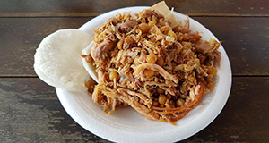

Lechona
Contexto Histórico
O departamento de Tolima, além de nos alimentar com o pamonha , também nos alimenta com uma das preparações mais famosas do país: o leitão. O concelho que se tornou conhecido pela preparação deste prato é o Espinal, a norte do departamento. Nos bons tempos, este concelho era reconhecido pelo seu arroz e tradição comercial da bonança, que era a flor bandeira do concelho, mas por motivos que não nos preocupam neste momento, o concelho recorreu em grande medida à venda deste. prato crioulo. Estima-se que apenas no departamento de Tolima mais de 20 mil pessoas dependam desse negócio. Fazendas de suínos, cozinheiras, restaurantes, transportadores, entre outros.

Ingredientes:
1 kg de peles de porco
1 kg de carne de porco, cortada em pedaços pequenos
¼ xícara de banha
4 cebolas longas, picadas
4 dentes de alho picados
1 colher de chá de cominho moído
1 colher de chá de sazón com açafrão ou cor (onoto moído)
¾ xícara de ervilhas amarelas ou verdes
1 ¼ xícaras de arroz cozido
Sal e pimenta
MODO DE PREPARO:
Primeiro, em uma panela média, derreta a banha, adicione a cebola longa e o alho, cozinhe por cerca de 3 minutos
À parte, em uma tigela grande, misture a carne de porco, o arroz cozido, o cominho em pó, os temperos, as ervilhas, o sal e a pimenta. Adicione a mistura de banha e cebola à carne, tampe e coloque na geladeira por 1 hora
Para montar: Lave a pele de porco com água fria e seque, coloque a pele de porco em umam assadeira forrada de papel alumínio ou assadeira, cubra com a mistura de arroz e carne, dobre a pele de porco para cobrir bem a mistura, amarre com cozinha fio para segurar
Pré-aqueça o forno a 220 ° C, asse por cerca de 40 minutos descoberto para permitir que a pele dourar. Após este tempo, se você deve cobrir com papel alumínio e cozinhe por cerca de mais 45 minutos
Retire do forno e transfira para uma tábua, corte o leitão após ter deixado em repouso por pelo menos 15 minutos. Sirva com arepa e decore com rodelas de limão